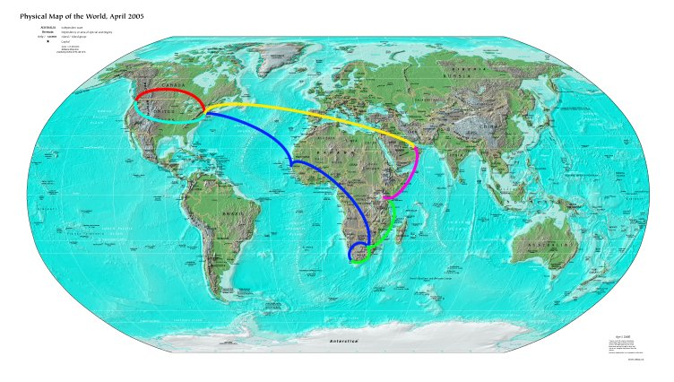

Bouncing around the planet in July, August and September of 2005

- Red: Seattle -> New York, Song [red-eye, new Delta low-cost carrier]
- Blue: New York to Cape Town, South African Airways [very long flight (~22hrs total) via Dakar and Johannesburg]
- Green: Cape Town to Nairobi, South African Airways
- Fuscia: Nairobi to Dubai, Emirates Airlines [red-eye, overbooked the first night]
- Yellow: Dubai to New York, Emirates Airlines [nice flight, good food, metal silverware]
- Cyan: New York to Seattle, Song [home two days before school starts]
From late July to the middle of September, I traveled from Seattle to South Africa, to Kenya, Dubai and New York City. What follows are pages about each of those places.
First, to South Africa
Then on to Kenya
Off to Dubai
I stayed in New York on the way out, and the way back. A big thanks to Addie and Tonya for letting me crash on their couches!
Back to the travel index
Adam can be reached at adam dot morley at gmail dot com